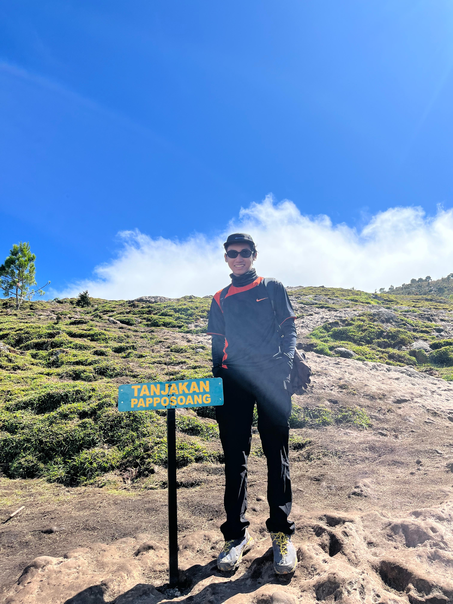
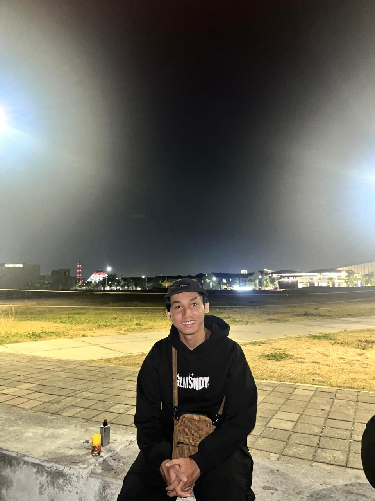
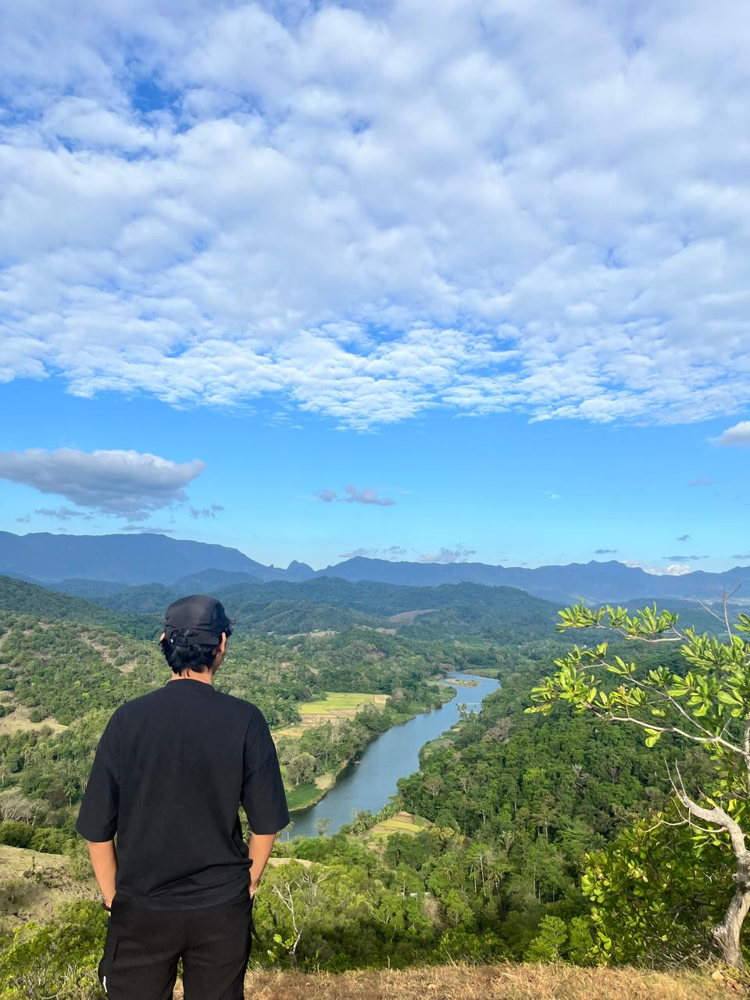
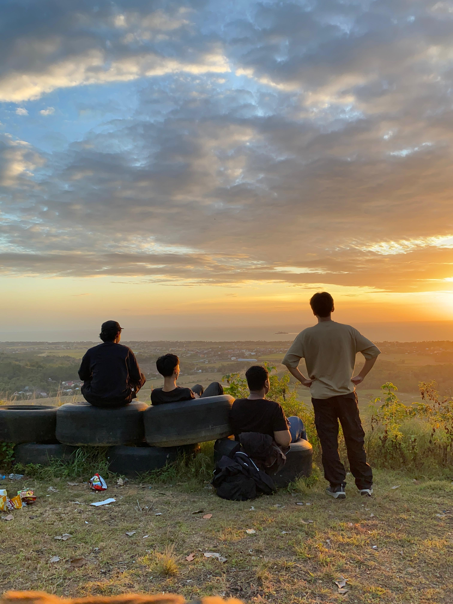
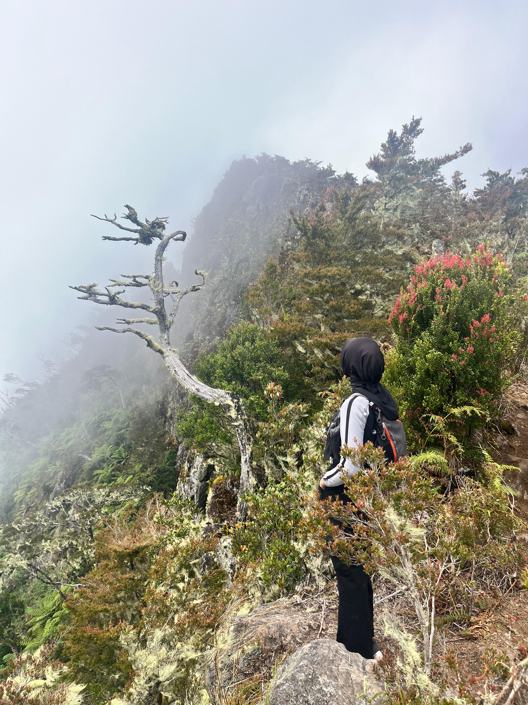
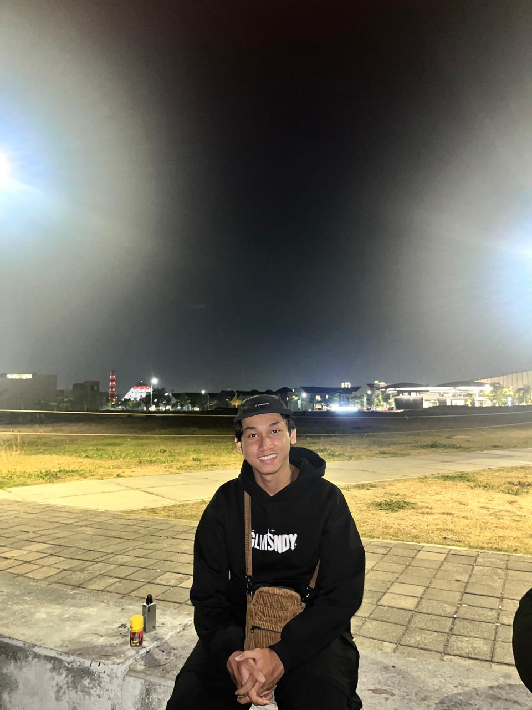
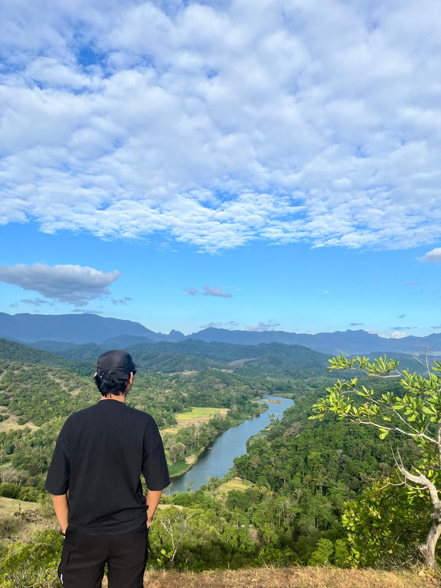
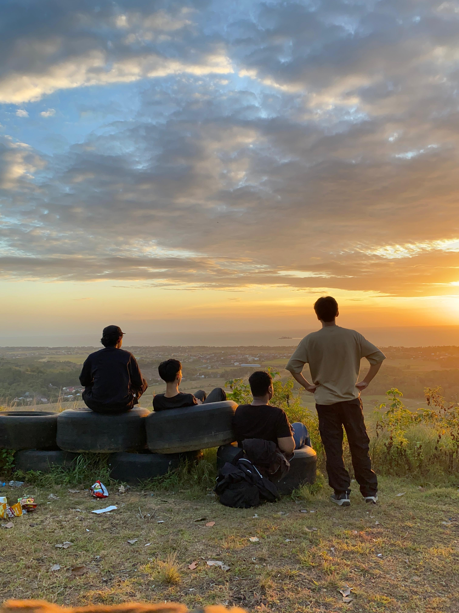
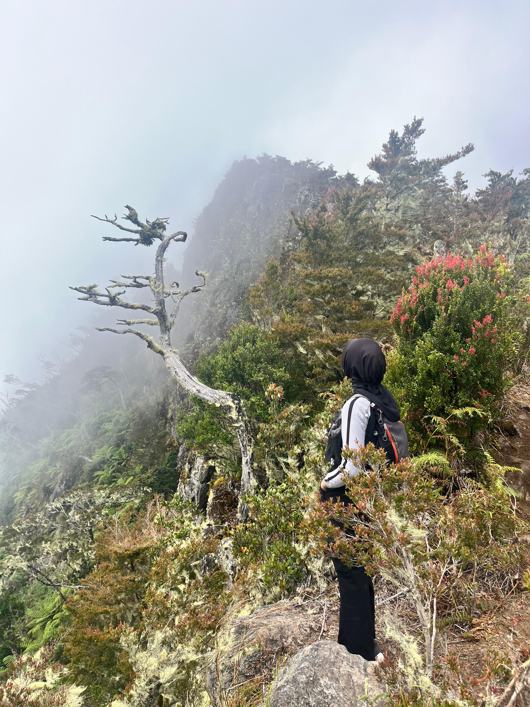

Data diri Dan Harapan saya
Blog Pribadi
Harapan Saya
Harapan saya di prodi Teknik Komputer adalah bisa memahami teknologi dari dasar, mengembangkan skill pemrograman, dan siap bersaing di dunia kerja..
Saya Mahasiswa Universitas Negeri Makassar Prodi Teknik Komputer Angkatan 24
Saya adalah Mahasiswa Teknik Komputer angkatan 24, saya anak ke2 dari 2 bersaudara saya biasanya di panggil alfian/pian dan saya menyukai naik gunung ada beberapa gunung di sulawesi yang sudah saya capai puncaknya, Selain itu, saya juga senang bermain futal, dan Bulutangkis, Untuk sekarang saya memiliki minat yang cukup besar terhadap dunia teknologi dan komputer,saya harap saya bisa mengembangkan diri saya di bidang komputer terutama di programmer.
Harapan saya di prodi Teknik Komputer adalah bisa memahami teknologi dari dasar, mengembangkan skill pemrograman, dan siap bersaing di dunia kerja..

 






